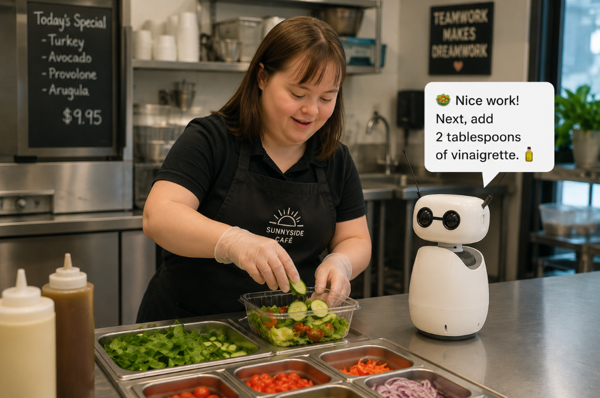
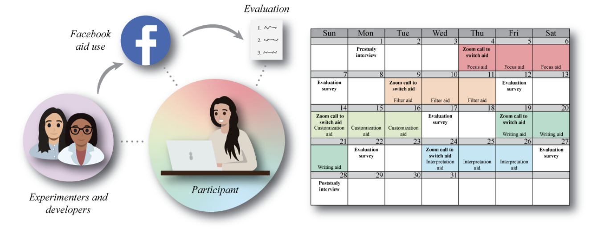

Research Projects
Portfolio
An overview of my research projects, from qualitative studies to technology probes and system design.The projects I've worked on, from talking with people about their experiences to building and testing new technology tools.
Population Focus
Adults with Down Syndrome & Intellectual and Developmental Disability

Security and Privacy Notifications with Smartphone AI-Assistant Study
Investigating how AI-powered smartphone assistant can support adults with IDD in understanding and responding to security and privacy notifications.Studying whether a smartphone tool that explains security and privacy warnings in plain language could help adults with intellectual and developmental disabilities navigate phone alerts more independently.

Social Robot Occupational Support Study
Investigating how social robots can provide occupational support for adults with IDD.Studying how robots could help adults with intellectual and developmental disabilities with job tasks and daily activities, like giving step-by-step instructions or reminders.

"I'm trying not to get hacked:" How Adults with IDD Navigate Security and Privacy Notifications
Exploring how adults with IDD encounter and respond to computer security and privacy notifications, and designing more accessible alternatives.Studying how adults with IDD respond to security and privacy warnings on phones and computers, and what makes these warnings easier or harder to understand.

Supporting Money Management among Adults with Down Syndrome: A Multi-Technology Probe Study
Prototyped and evaluated budgeting systems integrating augmented reality, gamification, and tangible interfaces in collaboration with adults with DS.Built and tested three budgeting tools (e.g., a tablet game, a camera-based money app, and a hands-on device) working directly with adults with Down syndrome to shape the designs.

National Technology Usage Survey Study with Adults with Down Syndrome
A national online survey study investigating the technology usage patterns and preferences of adults with DS across the United States.An online survey across the U.S. asking adults with Down syndrome how they use technology, what they like, and what they find challenging.

PRISMA Literature Review on Assistive Technologies with Adults with Down Syndrome
A systematic scoping review of 20 papers, identifying gaps in accessible technology research for adults with DS and informing future design directions.A structured review of 20 published research papers to understand what technology tools have been built for adults with Down syndrome and where there's still important work to do.

Exploratory Technology Study with Adults with Down Syndrome
Qualitative interviews with adults with DS, their parents, and domain experts to understand current technology use and identify unmet needs.In-depth conversations with adults with Down syndrome, their families, and specialists to learn how they use technology today and what tools would actually help them.
Population Focus
Adults with Traumatic Brain Injury

Supporting Individuals with TBI Through the Use of Digital Aids for Social Media: An In-the-Wild Study
An in-the-wild study examining how adults with traumatic brain injury use digital aids to navigate social media platforms in everyday life.A real-world study following adults with brain injuries as they used digital tools to navigate social media in their everyday lives.

SMART-TBI: Design and Evaluation of the Social Media Accessibility and Rehabilitation Toolkit for Users with TBI
Design and evaluation of a toolkit supporting accessible and rehabilitative social media use for adults with traumatic brain injury.Building and testing a set of tools to help adults with brain injuries use social media more safely and effectively as part of their recovery.

Conversational Agents for People with Traumatic Brain Injury (TBI)
A four-week at-home study giving nine adults with TBI a conversational agent, investigating daily use patterns, challenges, and design requirements.A four-week study where nine adults with brain injuries used a voice assistant at home, so we could learn how they used it, what was difficult, and what would make it better.
Research Artifacts